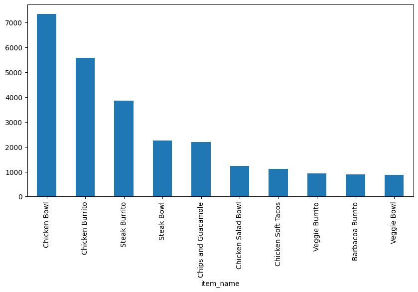
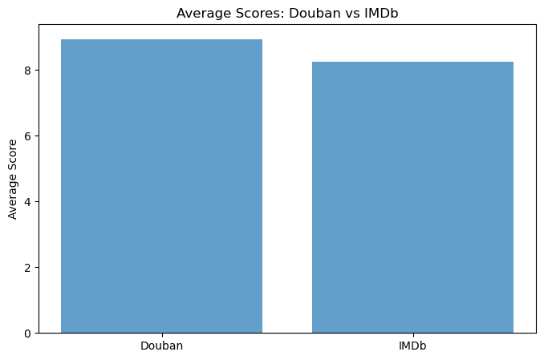
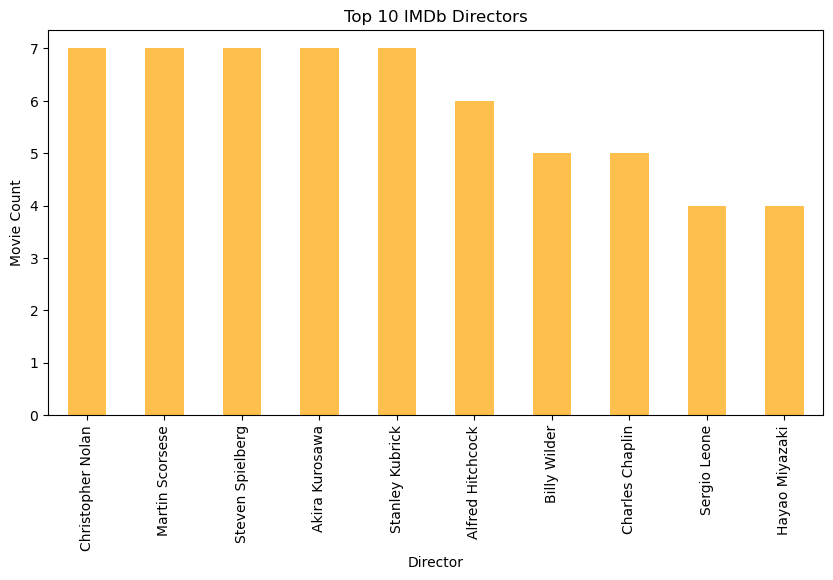

import pandas as pd
import numpy as npExercises-Chipotle 1
Ex2 - Getting and Knowing your Data
This time we are going to pull data directly from the internet. Special thanks to: https://github.com/justmarkham for sharing the dataset and materials.
Step 1. Import the necessary libraries
Step 2. Import the dataset from this address.
Step 3. Assign it to a variable called chipo.
url = 'https://raw.githubusercontent.com/justmarkham/DAT8/master/data/chipotle.tsv'
chipo = pd.read_csv(url,sep='\t')Step 4. See the first 10 entries
import pandas as pd
url ='https://raw.githubusercontent.com/justmarkham/DAT8/master/data/chipotle.tsv'
df = pd.read_csv(url,sep='\t')
df.head(10)| order_id | quantity | item_name | choice_description | item_price | |
|---|---|---|---|---|---|
| 0 | 1 | 1 | Chips and Fresh Tomato Salsa | NaN | $2.39 |
| 1 | 1 | 1 | Izze | [Clementine] | $3.39 |
| 2 | 1 | 1 | Nantucket Nectar | [Apple] | $3.39 |
| 3 | 1 | 1 | Chips and Tomatillo-Green Chili Salsa | NaN | $2.39 |
| 4 | 2 | 2 | Chicken Bowl | [Tomatillo-Red Chili Salsa (Hot), [Black Beans... | $16.98 |
| 5 | 3 | 1 | Chicken Bowl | [Fresh Tomato Salsa (Mild), [Rice, Cheese, Sou... | $10.98 |
| 6 | 3 | 1 | Side of Chips | NaN | $1.69 |
| 7 | 4 | 1 | Steak Burrito | [Tomatillo Red Chili Salsa, [Fajita Vegetables... | $11.75 |
| 8 | 4 | 1 | Steak Soft Tacos | [Tomatillo Green Chili Salsa, [Pinto Beans, Ch... | $9.25 |
| 9 | 5 | 1 | Steak Burrito | [Fresh Tomato Salsa, [Rice, Black Beans, Pinto... | $9.25 |
Step 5. What is the number of observations in the dataset?
# Solution 1
row_count = len(df)
print(row_count)4622# Solution 2
df.info()<class 'pandas.core.frame.DataFrame'>
RangeIndex: 4622 entries, 0 to 4621
Data columns (total 5 columns):
# Column Non-Null Count Dtype
--- ------ -------------- -----
0 order_id 4622 non-null int64
1 quantity 4622 non-null int64
2 item_name 4622 non-null object
3 choice_description 3376 non-null object
4 item_price 4622 non-null object
dtypes: int64(2), object(3)
memory usage: 180.7+ KBStep 6. What is the number of columns in the dataset?
number_of_columns = len(df.columns)
print(number_of_columns)5Step 7. Print the name of all the columns.
df.columnsIndex(['order_id', 'quantity', 'item_name', 'choice_description',
'item_price'],
dtype='object')Step 8. How is the dataset indexed?
df.indexRangeIndex(start=0, stop=4622, step=1)Step 9. Which was the most-ordered item?
data_sorted = df.groupby(["item_name"]).sum().sort_values(["quantity"],ascending=False)
max_value = data_sorted.head(1)
print(max_value) order_id quantity \
item_name
Chicken Bowl 713926 761
choice_description \
item_name
Chicken Bowl [Tomatillo-Red Chili Salsa (Hot), [Black Beans...
item_price
item_name
Chicken Bowl $16.98 $10.98 $11.25 $8.75 $8.49 $11.25 $8.75 ... Step 10. For the most-ordered item, how many items were ordered?
data_sorted = df.groupby(["item_name"]).sum().sort_values(["quantity"],ascending=False)
max_value = data_sorted.head(1)
print(max_value) order_id quantity \
item_name
Chicken Bowl 713926 761
choice_description \
item_name
Chicken Bowl [Tomatillo-Red Chili Salsa (Hot), [Black Beans...
item_price
item_name
Chicken Bowl $16.98 $10.98 $11.25 $8.75 $8.49 $11.25 $8.75 ... Step 11. What was the most ordered item in the choice_description column?
data_sorted = df.groupby(["choice_description"]).sum().sort_values(["quantity"],ascending=False)
max_value = data_sorted.head(1)
print(max_value) order_id quantity \
choice_description
[Diet Coke] 123455 159
item_name \
choice_description
[Diet Coke] Canned SodaCanned SodaCanned Soda6 Pack Soft D...
item_price
choice_description
[Diet Coke] $2.18 $1.09 $1.09 $6.49 $2.18 $1.25 $1.09 $6.4... Step 12. How many items were orderd in total?
total_sum_a = df['quantity'].sum()
print(total_sum_a)4972Step 13. Turn the item price into a float
Step 13.a. Check the item price type
type_a = df['item_price'].dtype
print(type_a)objectStep 13.b. Create a lambda function and change the type of item price
df['item_price'] = df['item_price'].apply(lambda x:x.replace('
# Exercises-chipotle 3
:::{.quarto-embed-nb-cell notebook="D:\code\jiedan\12-28\test\labs\Labexercises\Exercises-chipotle 3.ipynb" notebook-title="Visualizing Chipotle's Data" notebook-cellId="cell-0"}
# Visualizing Chipotle's Data
This time we are going to pull data directly from the internet.
Special thanks to: https://github.com/justmarkham for sharing the dataset and materials.
### Step 1. Import the necessary libraries
::: {#cell-2 .cell execution_count=13}
``` {.python .cell-code}
import pandas as pd
import matplotlib.pyplot as plt
from collections import Counter
# set this so the graphs open internally
%matplotlib inlineStep 2. Import the dataset from this address.
Step 3. Assign it to a variable called chipo.
chipo = pd.read_csv('https://raw.githubusercontent.com/justmarkham/DAT8/master/data/chipotle.tsv',sep='\t')
chipo| order_id | quantity | item_name | choice_description | item_price | |
|---|---|---|---|---|---|
| 0 | 1 | 1 | Chips and Fresh Tomato Salsa | NaN | $2.39 |
| 1 | 1 | 1 | Izze | [Clementine] | $3.39 |
| 2 | 1 | 1 | Nantucket Nectar | [Apple] | $3.39 |
| 3 | 1 | 1 | Chips and Tomatillo-Green Chili Salsa | NaN | $2.39 |
| 4 | 2 | 2 | Chicken Bowl | [Tomatillo-Red Chili Salsa (Hot), [Black Beans... | $16.98 |
| ... | ... | ... | ... | ... | ... |
| 4617 | 1833 | 1 | Steak Burrito | [Fresh Tomato Salsa, [Rice, Black Beans, Sour ... | $11.75 |
| 4618 | 1833 | 1 | Steak Burrito | [Fresh Tomato Salsa, [Rice, Sour Cream, Cheese... | $11.75 |
| 4619 | 1834 | 1 | Chicken Salad Bowl | [Fresh Tomato Salsa, [Fajita Vegetables, Pinto... | $11.25 |
| 4620 | 1834 | 1 | Chicken Salad Bowl | [Fresh Tomato Salsa, [Fajita Vegetables, Lettu... | $8.75 |
| 4621 | 1834 | 1 | Chicken Salad Bowl | [Fresh Tomato Salsa, [Fajita Vegetables, Pinto... | $8.75 |
4622 rows × 5 columns
Step 4. See the first 10 entries
chipo.head(10)| order_id | quantity | item_name | choice_description | item_price | |
|---|---|---|---|---|---|
| 0 | 1 | 1 | Chips and Fresh Tomato Salsa | NaN | 2.39 |
| 1 | 1 | 1 | Izze | [Clementine] | 3.39 |
| 2 | 1 | 1 | Nantucket Nectar | [Apple] | 3.39 |
| 3 | 1 | 1 | Chips and Tomatillo-Green Chili Salsa | NaN | 2.39 |
| 4 | 2 | 2 | Chicken Bowl | [Tomatillo-Red Chili Salsa (Hot), [Black Beans... | 16.98 |
| 5 | 3 | 1 | Chicken Bowl | [Fresh Tomato Salsa (Mild), [Rice, Cheese, Sou... | 10.98 |
| 6 | 3 | 1 | Side of Chips | NaN | 1.69 |
| 7 | 4 | 1 | Steak Burrito | [Tomatillo Red Chili Salsa, [Fajita Vegetables... | 11.75 |
| 8 | 4 | 1 | Steak Soft Tacos | [Tomatillo Green Chili Salsa, [Pinto Beans, Ch... | 9.25 |
| 9 | 5 | 1 | Steak Burrito | [Fresh Tomato Salsa, [Rice, Black Beans, Pinto... | 9.25 |
Step 5. Create a histogram of the top 5 items bought
# get the Series of the names
x = chipo.item_name
# use the Counter class from collections to create a dictionary with keys(text) and frequency
letter_counts = Counter(x)
# convert the dictionary to a DataFrame
df = pd.DataFrame.from_dict(letter_counts, orient='index')
# sort the values from the top to the least value and slice the first 5 items
df = df[0].sort_values(ascending = True)[45:50]
# create the plot
df.plot(kind='bar')
# Set the title and labels
plt.xlabel('Items')
plt.ylabel('Number of Times Ordered')
plt.title('Most ordered Chipotle\'s Items')
# show the plot
plt.show()
Step 6. Create a scatterplot with the number of items orderered per order price
Hint: Price should be in the X-axis and Items ordered in the Y-axis
# create a list of prices
chipo.item_price = [float(value[1:-1]) for value in chipo.item_price] # strip the dollar sign and trailing space
# then groupby the orders and sum
orders = chipo.groupby('order_id').sum()
# creates the scatterplot
# plt.scatter(orders.quantity, orders.item_price, s = 50, c = 'green')
plt.scatter(x = orders.item_price, y = orders.quantity, s = 50, c = 'green')
# Set the title and labels
plt.xlabel('Order Price')
plt.ylabel('Items ordered')
plt.title('Number of items ordered per order price')
plt.ylim(0)
Step 7. BONUS: Create a question and a graph to answer your own question.
# 用柱形图显示商品销售额前10的商品
def parse_price(price):
return float(price[1:])
item_price_new = chipo['item_price'].apply(parse_price)
chipo['item_price_new']=item_price_new
a = chipo.groupby('item_name')['item_price_new'].sum()
b = a.sort_values(ascending=False)
b.head(10).plot(kind='bar' , figsize=(10,5))
Exercises-Occupation 1
Exercises-World Food Facts 1
77fba8e3b056425013930abb11e0a970
import pandas as pd
import matplotlib as mpl
import matplotlib.pyplot as plt
import numpy as np
from pathlib import Path
from lets_plot import *
LetsPlot.setup_html(no_js=True)plt.style.use(
"https://raw.githubusercontent.com/aeturrell/core_python/main/plot_style.txt"
)data_np = pd.read_excel(
"data/doing-economics-datafile-working-in-excel-project-2.xlsx",
usecols="A:Q",
header=1,
index_col="Period",
)
data_n = data_np.iloc[:10, :].copy()
data_p = data_np.iloc[14:24, :].copy()test_data = {
"City A": [14.1, 14.1, 13.7],
"City B": [11.0, 12.6, 12.1],
}
# Original dataframe
test_df = pd.DataFrame.from_dict(test_data)
# A copy of the dataframe
test_copy = test_df.copy()
# A pointer to the dataframe
test_pointer = test_df
test_pointer.iloc[1, 1] = 99print("test_df=")
print(f"{test_df}\n")
print("test_copy=")
print(f"{test_copy}\n")test_df=
City A City B
0 14.1 11.0
1 14.1 99.0
2 13.7 12.1
test_copy=
City A City B
0 14.1 11.0
1 14.1 12.6
2 13.7 12.1
data_n.info()<class 'pandas.core.frame.DataFrame'>
Index: 10 entries, 1 to 10
Data columns (total 16 columns):
# Column Non-Null Count Dtype
--- ------ -------------- -----
0 Copenhagen 10 non-null object
1 Dnipropetrovs’k 10 non-null object
2 Minsk 10 non-null object
3 St. Gallen 10 non-null object
4 Muscat 10 non-null object
5 Samara 10 non-null object
6 Zurich 10 non-null object
7 Boston 10 non-null object
8 Bonn 10 non-null object
9 Chengdu 10 non-null object
10 Seoul 10 non-null object
11 Riyadh 10 non-null object
12 Nottingham 10 non-null object
13 Athens 10 non-null object
14 Istanbul 10 non-null object
15 Melbourne 10 non-null object
dtypes: object(16)
memory usage: 1.3+ KBdata_n = data_n.astype("double")
data_p = data_p.astype("double")mean_n_c = data_n.mean(axis=1)
mean_p_c = data_p.agg(np.mean, axis=1)fig, ax = plt.subplots()
mean_n_c.plot(ax=ax, label="Without punishment")
mean_p_c.plot(ax=ax, label="With punishment")
ax.set_title("Average contributions to the public goods game")
ax.set_ylabel("Average contribution")
ax.legend();
partial_names_list = ["F. Kennedy", "Lennon", "Maynard Keynes", "Wayne"]
["John " + name for name in partial_names_list]['John F. Kennedy', 'John Lennon', 'John Maynard Keynes', 'John Wayne']# Create new dataframe with bars in
compare_grps = pd.DataFrame(
[mean_n_c.loc[[1, 10]], mean_p_c.loc[[1, 10]]],
index=["Without punishment", "With punishment"],
)
# Rename columns to have 'round' in them
compare_grps.columns = ["Round " + str(i) for i in compare_grps.columns]
# Swap the column and index variables around with the transpose function, ready for plotting (.T is transpose)
compare_grps = compare_grps.T
# Make a bar chart
compare_grps.plot.bar(rot=0);
n_c = data_n.agg(["std", "var", "mean"], 1)
n_c| std | var | mean | |
|---|---|---|---|
| Period | |||
| 1 | 2.020724 | 4.083325 | 10.578313 |
| 2 | 2.238129 | 5.009220 | 10.628398 |
| 3 | 2.329569 | 5.426891 | 10.407079 |
| 4 | 2.068213 | 4.277504 | 9.813033 |
| 5 | 2.108329 | 4.445049 | 9.305433 |
| 6 | 2.240881 | 5.021549 | 8.454844 |
| 7 | 2.136614 | 4.565117 | 7.837568 |
| 8 | 2.349442 | 5.519880 | 7.376388 |
| 9 | 2.413845 | 5.826645 | 6.392985 |
| 10 | 2.187126 | 4.783520 | 4.383769 |
p_c = data_p.agg(["std", "var", "mean"], 1)fig, ax = plt.subplots()
n_c["mean"].plot(ax=ax, label="mean")
# mean + 2 standard deviations
(n_c["mean"] + 2 * n_c["std"]).plot(ax=ax, ylim=(0, None), color="red", label="±2 s.d.")
# mean - 2 standard deviations
(n_c["mean"] - 2 * n_c["std"]).plot(ax=ax, ylim=(0, None), color="red", label="")
for i in range(len(data_n.columns)):
ax.scatter(x=data_n.index, y=data_n.iloc[:, i], color="k", alpha=0.3)
ax.legend()
ax.set_ylabel("Average contribution")
ax.set_title("Contribution to public goods game without punishment")
plt.show();
fig, ax = plt.subplots()
p_c["mean"].plot(ax=ax, label="mean")
# mean + 2 sd
(p_c["mean"] + 2 * p_c["std"]).plot(ax=ax, ylim=(0, None), color="red", label="±2 s.d.")
# mean - 2 sd
(p_c["mean"] - 2 * p_c["std"]).plot(ax=ax, ylim=(0, None), color="red", label="")
for i in range(len(data_p.columns)):
ax.scatter(x=data_p.index, y=data_p.iloc[:, i], color="k", alpha=0.3)
ax.legend()
ax.set_ylabel("Average contribution")
ax.set_title("Contribution to public goods game with punishment")
plt.show();
data_p.apply(lambda x: x.max() - x.min(), axis=1)Period
1 10.199675
2 12.185065
3 12.689935
4 12.625000
5 12.140375
6 12.827541
7 13.098931
8 13.482621
9 13.496754
10 11.307360
dtype: float64# A lambda function accepting three inputs, a, b, and c, and calculating the sum of the squares
test_function = lambda a, b, c: a**2 + b**2 + c**2
# Now we apply the function by handing over (in parenthesis) the following inputs: a=3, b=4 and c=5
test_function(3, 4, 5)50range_function = lambda x: x.max() - x.min()
range_p = data_p.apply(range_function, axis=1)
range_n = data_n.apply(range_function, axis=1)fig, ax = plt.subplots()
range_p.plot(ax=ax, label="With punishment")
range_n.plot(ax=ax, label="Without punishment")
ax.set_ylim(0, None)
ax.legend()
ax.set_title("Range of contributions to the public goods game")
plt.show();
funcs_to_apply = [range_function, "max", "min", "std", "mean"]
summ_p = data_p.apply(funcs_to_apply, axis=1).rename(columns={"<lambda>": "range"})
summ_n = data_n.apply(funcs_to_apply, axis=1).rename(columns={"<lambda>": "range"})summ_n.loc[[1, 10], :].round(2)| range | max | min | std | mean | |
|---|---|---|---|---|---|
| Period | |||||
| 1 | 6.14 | 14.10 | 7.96 | 2.02 | 10.58 |
| 10 | 7.38 | 8.68 | 1.30 | 2.19 | 4.38 |
summ_p.loc[[1, 10], :].round(2)| range | max | min | std | mean | |
|---|---|---|---|---|---|
| Period | |||||
| 1 | 10.20 | 16.02 | 5.82 | 3.21 | 10.64 |
| 10 | 11.31 | 17.51 | 6.20 | 3.90 | 12.87 |
%pip install pingouinCollecting pingouin
Downloading pingouin-0.5.5-py3-none-any.whl.metadata (19 kB)
Requirement already satisfied: matplotlib in c:\users\hp\anaconda3\lib\site-packages (from pingouin) (3.9.2)
Requirement already satisfied: numpy in c:\users\hp\anaconda3\lib\site-packages (from pingouin) (1.26.4)
Requirement already satisfied: pandas>=1.5 in c:\users\hp\anaconda3\lib\site-packages (from pingouin) (2.2.2)
Collecting pandas-flavor (from pingouin)
Downloading pandas_flavor-0.6.0-py3-none-any.whl.metadata (6.3 kB)
Requirement already satisfied: scikit-learn>=1.2 in c:\users\hp\anaconda3\lib\site-packages (from pingouin) (1.5.1)
Requirement already satisfied: scipy in c:\users\hp\anaconda3\lib\site-packages (from pingouin) (1.13.1)
Requirement already satisfied: seaborn in c:\users\hp\anaconda3\lib\site-packages (from pingouin) (0.13.2)
Requirement already satisfied: statsmodels in c:\users\hp\anaconda3\lib\site-packages (from pingouin) (0.14.2)
Requirement already satisfied: tabulate in c:\users\hp\anaconda3\lib\site-packages (from pingouin) (0.9.0)
Requirement already satisfied: python-dateutil>=2.8.2 in c:\users\hp\anaconda3\lib\site-packages (from pandas>=1.5->pingouin) (2.9.0.post0)
Requirement already satisfied: pytz>=2020.1 in c:\users\hp\anaconda3\lib\site-packages (from pandas>=1.5->pingouin) (2024.1)
Requirement already satisfied: tzdata>=2022.7 in c:\users\hp\anaconda3\lib\site-packages (from pandas>=1.5->pingouin) (2023.3)
Requirement already satisfied: joblib>=1.2.0 in c:\users\hp\anaconda3\lib\site-packages (from scikit-learn>=1.2->pingouin) (1.4.2)
Requirement already satisfied: threadpoolctl>=3.1.0 in c:\users\hp\anaconda3\lib\site-packages (from scikit-learn>=1.2->pingouin) (3.5.0)
Requirement already satisfied: contourpy>=1.0.1 in c:\users\hp\anaconda3\lib\site-packages (from matplotlib->pingouin) (1.2.0)
Requirement already satisfied: cycler>=0.10 in c:\users\hp\anaconda3\lib\site-packages (from matplotlib->pingouin) (0.11.0)
Requirement already satisfied: fonttools>=4.22.0 in c:\users\hp\anaconda3\lib\site-packages (from matplotlib->pingouin) (4.51.0)
Requirement already satisfied: kiwisolver>=1.3.1 in c:\users\hp\anaconda3\lib\site-packages (from matplotlib->pingouin) (1.4.4)
Requirement already satisfied: packaging>=20.0 in c:\users\hp\anaconda3\lib\site-packages (from matplotlib->pingouin) (24.1)
Requirement already satisfied: pillow>=8 in c:\users\hp\anaconda3\lib\site-packages (from matplotlib->pingouin) (10.4.0)
Requirement already satisfied: pyparsing>=2.3.1 in c:\users\hp\anaconda3\lib\site-packages (from matplotlib->pingouin) (3.1.2)
Requirement already satisfied: xarray in c:\users\hp\anaconda3\lib\site-packages (from pandas-flavor->pingouin) (2023.6.0)
Requirement already satisfied: patsy>=0.5.6 in c:\users\hp\anaconda3\lib\site-packages (from statsmodels->pingouin) (0.5.6)
Requirement already satisfied: six in c:\users\hp\anaconda3\lib\site-packages (from patsy>=0.5.6->statsmodels->pingouin) (1.16.0)
Downloading pingouin-0.5.5-py3-none-any.whl (204 kB)
Downloading pandas_flavor-0.6.0-py3-none-any.whl (7.2 kB)
Installing collected packages: pandas-flavor, pingouin
Successfully installed pandas-flavor-0.6.0 pingouin-0.5.5
Note: you may need to restart the kernel to use updated packages.import pingouin as pgpg.ttest(x=data_n.iloc[0, :], y=data_p.iloc[0, :])| T | dof | alternative | p-val | CI95% | cohen-d | BF10 | power | |
|---|---|---|---|---|---|---|---|---|
| T-test | -0.063782 | 30 | two-sided | 0.949567 | [-2.0, 1.87] | 0.02255 | 0.337 | 0.050437 |
pg.ttest(x=data_n.iloc[0, :], y=data_p.iloc[0, :], paired=True)| T | dof | alternative | p-val | CI95% | cohen-d | BF10 | power | |
|---|---|---|---|---|---|---|---|---|
| T-test | -0.149959 | 15 | two-sided | 0.882795 | [-0.92, 0.8] | 0.02255 | 0.258 | 0.05082 |
4.IMDb and Douban top-250 movie datasets
import pandas as pd
import matplotlib.pyplot as plt
import seaborn as snsimdb_data = pd.read_csv('IMDB_Top250.csv') # Replace with actual file path
douban_data = pd.read_csv('douban_top250.csv') # Replace with actual file pathfrom bs4 import BeautifulSoup
import re
import urllib.request, urllib.error # for URL requests
import csv # for saving as CSV# Regular expressions to extract information
findLink = re.compile(r'<a href="(.*?)">') # detail link
findImgSrc = re.compile(r'<img.*src="(.*?)"', re.S) # image link
findTitle = re.compile(r'<span class="title">(.*)</span>') # movie title
findRating = re.compile(r'<span class="rating_num" property="v:average">(.*)</span>') # rating
findJudge = re.compile(r'<span>(\d*)人评价</span>') # number of reviews
findInq = re.compile(r'<span class="inq">(.*)</span>') # summary
findBd = re.compile(r'<p class="">(.*?)</p>', re.S) # additional infoimport pandas as pd
import matplotlib.pyplot as plt
# Load datasets
douban_file_path = 'douban_top250.csv'
imdb_file_path = 'IMDB_Top250.csv'
douban_data = pd.read_csv(douban_file_path, encoding='utf-8', on_bad_lines='skip')
imdb_data = pd.read_csv(imdb_file_path, encoding='utf-8', on_bad_lines='skip')
# Renaming columns for clarity and merging compatibility
douban_data.rename(columns={
'影片中文名': 'Title',
'评分': 'Douban_Score',
'评价数': 'Douban_Reviews',
'相关信息': 'Douban_Info'
}, inplace=True)imdb_data.rename(columns={
'Name': 'Title',
'Year': 'Release_Year',
'IMDB Ranking': 'IMDB_Score',
'Genre': 'IMDB_Genre',
'Director': 'IMDB_Director'
}, inplace=True)# Calculate average scores for both platforms
douban_avg_score = douban_data['Douban_Score'].mean()
imdb_avg_score = imdb_data['IMDB_Score'].mean()
# Find overlapping movies by title
overlap_movies = pd.merge(douban_data, imdb_data, on='Title')
# Visualize average scores
plt.figure(figsize=(8, 5))
plt.bar(['Douban', 'IMDb'], [douban_avg_score, imdb_avg_score], alpha=0.7)
plt.title('Average Scores: Douban vs IMDb')
plt.ylabel('Average Score')
plt.show()
# Analyze release year distribution
plt.figure(figsize=(10, 5))
douban_data['Douban_Info'] = douban_data['Douban_Info'].astype(str)
douban_years = douban_data['Douban_Info'].str.extract(r'(\d{4})').dropna()
douban_years = douban_years[0].astype(int).value_counts().sort_index()
imdb_years = imdb_data['Release_Year'].value_counts().sort_index()
douban_years.plot(kind='bar', alpha=0.7, label='Douban', figsize=(10, 5))
imdb_years.plot(kind='bar', alpha=0.7, label='IMDb', color='orange')
plt.title('Release Year Distribution')
plt.xlabel('Year')
plt.ylabel('Number of Movies')
plt.legend()
plt.show()

# Analyze genre distribution
imdb_genres = imdb_data['IMDB_Genre'].str.split(',').explode().str.strip().value_counts()
plt.figure(figsize=(10, 5))
imdb_genres.head(10).plot(kind='bar', alpha=0.7, color='orange')
plt.title('Top 10 IMDb Genres')
plt.xlabel('Genre')
plt.ylabel('Count')
plt.show()
# Top directors by movie count
douban_directors = douban_data['Douban_Info'].str.extract(r'导演: (.+?) ').dropna()
douban_top_directors = douban_directors[0].value_counts().head(10)
imdb_top_directors = imdb_data['IMDB_Director'].value_counts().head(10)
plt.figure(figsize=(10, 5))
douban_top_directors.plot(kind='bar', alpha=0.7, label='Douban', color='blue')
plt.title('Top 10 Douban Directors')
plt.xlabel('Director')
plt.ylabel('Movie Count')
plt.show()
plt.figure(figsize=(10, 5))
imdb_top_directors.plot(kind='bar', alpha=0.7, label='IMDb', color='orange')
plt.title('Top 10 IMDb Directors')
plt.xlabel('Director')
plt.ylabel('Movie Count')
plt.show()
# Save overlapping movies to a CSV file
overlap_movies.to_csv('overlap_movies.csv', index=False)
# Print results
print(f"豆瓣平均评分: {douban_avg_score}")
print(f"IMDb平均评分: {imdb_avg_score}")
print(f"重叠电影数量: {len(overlap_movies)}")

豆瓣平均评分: 8.9396
IMDb平均评分: 8.254
重叠电影数量: 0,’’)).astype(np.float64); # dollarizer = lambda x:float(x[1:-1]) # chipo.item_price = chipo.item_price.apply(dollarizer)
:::